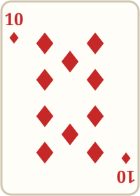
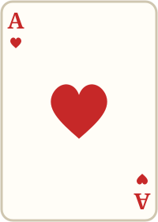
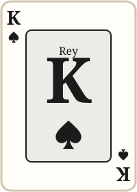

Juego de cartasDuelo de Palos
Un juego de cartas inventado: vos contra la máquina en 8 rondas. Jugá la carta que mejor combine con la carta de mesa y llevate los puntos de las dos.
Récord: —
Jugar a Duelo de PalosTres juegos clásicos pero mas divertidos, en un solo sitio: un juego de cartas, uno de dados y uno de preguntas. Elegí uno, superá tu récord y dejá tu nombre en la tabla de posiciones.



Juego de cartasUn juego de cartas inventado: vos contra la máquina en 8 rondas. Jugá la carta que mejor combine con la carta de mesa y llevate los puntos de las dos.
Récord: —
Jugar a Duelo de Palos Juego de dados
Juego de dados
Un juego de dados inventado para dos jugadores: la máquina tira tres dados rojos y cada uno, en su turno, intenta igualar su suma. Guardá dados, arriesgá un tiro más y cuidá tus tres vidas.
Récord: —
Jugar a Blanco¿Quién pintó esta obra? ¿Quién es este artista? Imágenes y datos de Wikipedia en español sobre grandes artistas plásticos. Respondé antes de que se termine el tiempo y cuidá tus tres vidas.
Récord: —
Jugar a la Trivia